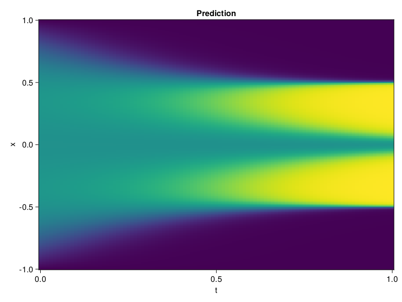

Allen-Cahn Equation with Sequential Training
In this tutorial we are going to solve the Allen-Cahn equation with periodic boundary condition from $t=0$ to $t=1$. The traning process is split into four stages, namely $t\in [0,0.25]$, $t\in [0.0,0.5]$, $t\in [0.0,0.75]$ and $t\in [0.0, 1.0]$.
using ModelingToolkit, IntervalSets
using Sophon
using Optimization, OptimizationOptimJL
@parameters t, x
@variables u(..)
Dₓ = Differential(x)
Dₓ² = Differential(x)^2
Dₜ = Differential(t)
eq = Dₜ(u(x, t)) - 0.0001 * Dₓ²(u(x, t)) + 5 * u(x,t) * (abs2(u(x,t)) - 1.0) ~ 0.0
domain = [x ∈ -1.0..1.0, t ∈ 0.0..0.25]
bcs = [u(x,0) ~ x^2 * cospi(x),
u(-1,t) ~ u(1,t)]
@named allen = PDESystem(eq, bcs, domain, [x, t], [u(x, t)])\[ \begin{align} - 0.0001 \frac{\mathrm{d}}{\mathrm{d}x} \frac{\mathrm{d}}{\mathrm{d}x} u\left( x, t \right) + 5 \left( -1 + \left|u\left( x, t \right)\right|^{2} \right) u\left( x, t \right) + \frac{\mathrm{d}}{\mathrm{d}t} u\left( x, t \right) =& 0 \end{align} \]
Then we define the neural net, the sampler, and the training strategy.
chain = FullyConnected(2, 1, tanh; hidden_dims=16, num_layers=4)
pinn = PINN(chain)
sampler = QuasiRandomSampler(500, (300, 100))
strategy = NonAdaptiveTraining(1, (50, 1))
prob = Sophon.discretize(allen, pinn, sampler, strategy)OptimizationProblem. In-place: true
u0: ComponentVector{Float64}(layer_1 = (weight = [1.03082275390625 1.3828974962234497; -1.9898483753204346 -0.3815898299217224; … ; 0.1703125536441803 -0.13509590923786163; 0.4331943392753601 -0.6775237917900085], bias = [0.0; 0.0; … ; 0.0; 0.0;;]), layer_2 = (weight = [0.44693300127983093 -0.2525443732738495 … -0.34647002816200256 0.6509177088737488; -0.40848398208618164 -0.27363166213035583 … -0.3443543314933777 0.39433276653289795; … ; -0.11942292749881744 0.5273911952972412 … 0.6896305680274963 0.6655582785606384; -0.26527923345565796 -0.11518740653991699 … 0.6598952412605286 -0.1166871190071106], bias = [0.0; 0.0; … ; 0.0; 0.0;;]), layer_3 = (weight = [-0.35580897331237793 0.1481761634349823 … -0.224069282412529 -0.7095323204994202; -0.19121843576431274 0.08749159425497055 … -0.34507468342781067 -0.4280431568622589; … ; 0.18518871068954468 -0.44599997997283936 … -0.3105790913105011 -0.4859125018119812; 0.03635105490684509 0.04603248089551926 … -0.15883241593837738 -0.21092937886714935], bias = [0.0; 0.0; … ; 0.0; 0.0;;]), layer_4 = (weight = [-0.70084148645401 0.5110989212989807 … -0.2129753828048706 -0.17902806401252747; -0.4041767716407776 -0.05535954236984253 … 0.3846457302570343 -0.3649444282054901; … ; -0.38214772939682007 0.5754103660583496 … -0.19933132827281952 -0.41129204630851746; -0.14169993996620178 -0.12493826448917389 … -0.16276682913303375 0.5747472047805786], bias = [0.0; 0.0; … ; 0.0; 0.0;;]), layer_5 = (weight = [0.5870585441589355 0.27914226055145264 … -0.05676969140768051 -0.6085271835327148], bias = [0.0;;]))We solve the equation sequentially in time.
function train(allen, prob, sampler, strategy)
bfgs = BFGS()
res = Optimization.solve(prob, bfgs; maxiters=2000)
for tmax in [0.5, 0.75, 1.0]
allen.domain[2] = t ∈ 0.0..tmax
data = Sophon.sample(allen, sampler)
prob = remake(prob; u0=res.u, p=data)
res = Optimization.solve(prob, bfgs; maxiters=2000)
end
return res
end
res = train(allen, prob, sampler, strategy)u: ComponentVector{Float64}(layer_1 = (weight = [0.9374151956389347 0.8446310263283199; -2.4271378884801855 -0.4499485004140676; … ; -0.5503738988518879 0.37855997934371827; 0.5083936025748507 -0.39192573960944443], bias = [1.3850204873335; -0.6711977183224686; … ; -0.4863095348101751; 0.27252281513698573;;]), layer_2 = (weight = [0.6049853445418705 -0.8289775857583427 … -0.5187158040628362 0.8608657149341955; -0.9260501673152808 -0.23587161366483134 … -0.24492427794338129 0.45832515644975713; … ; -0.3229737520892024 1.2592940069113745 … 0.9779629401796759 0.24856222870960804; -0.29951044683502 0.0877493859150975 … 0.7609148447186375 -0.42558363872772625], bias = [0.3234474116922744; -0.20341608156986019; … ; -0.6243069310933876; -0.16239207480552953;;]), layer_3 = (weight = [-0.016834438012956733 -0.23469753742752958 … -0.01794741739340905 -1.1888030834427015; -0.0059571484276791575 0.06454439032385206 … -0.11737478708973893 -0.5925267695445182; … ; 0.1226927823248984 -0.1323520088363595 … -0.05331086450882569 -0.43331456436134774; -0.2867654933731511 0.2060711426037308 … 0.07125141773518856 -1.00985572629281], bias = [-0.5730640252283034; 0.33650122264028787; … ; -0.051160524787661414; -0.6082583695165031;;]), layer_4 = (weight = [-1.2876012597244495 1.1305841564150958 … -0.6319079269808352 -0.02930407861411811; -1.1703910681783924 -0.006428619823702187 … -0.0005252043861003456 -0.8933732277706385; … ; -0.20499537554991876 0.5490996163707383 … -0.3102162224505467 -0.6111833429454192; 0.0012545185056555262 -0.19800025549246564 … -0.4933616703036344 1.0984375955841268], bias = [0.18866148307204236; 0.22559714411827278; … ; 0.11033143776480217; 0.27376493808557767;;]), layer_5 = (weight = [0.46072803532145373 0.033959253186234065 … -0.16950855214563507 -0.6082106321944089], bias = [-0.990804688381627;;]))Let's plot the result.
using CairoMakie
phi = pinn.phi
xs, ts = [infimum(d.domain):0.01:supremum(d.domain) for d in allen.domain]
axis = (xlabel="t", ylabel="x", title="Prediction")
u_pred = [sum(pinn.phi([x, t], res.u)) for x in xs, t in ts]
fig, ax, hm = heatmap(ts, xs, u_pred', axis=axis)